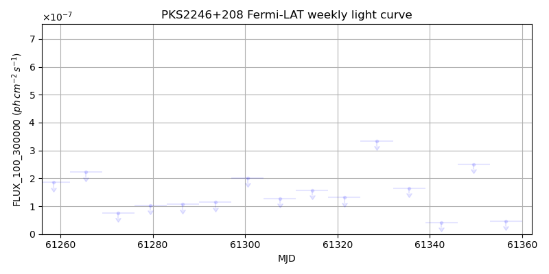
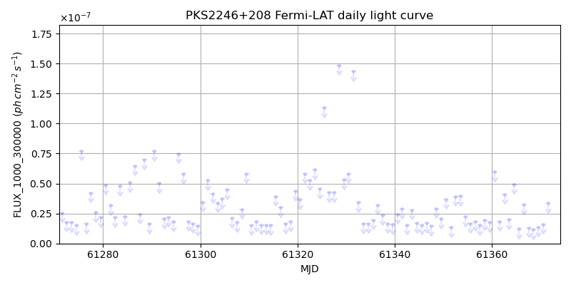
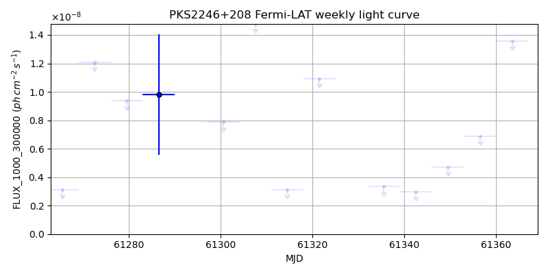

LAT Lightcurve site: https://fermi.gsfc.nasa.gov/ssc/data/access/lat/msl_lc/source/PKS_2246p208
NED: Query
Time of last update of this page: UT: 2026-11-28 16:30 (MJD: 61372.688)
| Property | Value |
|---|---|
| R.A. | 22:49:00.48 |
| Dec. | 21:07:01.2 |
| z | 1.279 |
| 3FGL SpectrumType | |
| 3FGL PL Index | -1.00 |
| 3FGL Flux_100_300000 | -1.00e+00 |
| 3FGL Flux_1000_300000 | -1.00e+00 |
| 3FGL Flux >200 GeV | -1.00e+00 |
| 3FGL Extrap. Crab >200 GeV | -1.00 |
| 3FGL Flux After EBL Absorption >200GeV | -1.00e+00 |
| 3FGL EBL Crab Fraction >200GeV | -1.00 |
| MJD | dMJD | Flux | dFlux | Frac3FGL | FracCrab>200GeV | EBLFracCrab>200GeV |
|---|---|---|---|---|---|---|
| 61367.50 | 0.50 | 2.60e-07 | 0.00e+00 | 0.00 | 0.00 | -0.00 |
| 61368.50 | 0.50 | 3.22e-07 | 0.00e+00 | 0.00 | 0.00 | -0.00 |
| 61369.50 | 0.50 | 2.39e-07 | 0.00e+00 | 0.00 | 0.00 | -0.00 |
| 61370.50 | 0.50 | 3.66e-07 | 0.00e+00 | 0.00 | 0.00 | -0.00 |
| 61371.50 | 0.50 | 8.64e-08 | 0.00e+00 | 0.00 | 0.00 | -0.00 |

| MJD | dMJD | Flux | dFlux | Frac3FGL | FracCrab>200GeV | EBLFracCrab>200GeV |
|---|---|---|---|---|---|---|
| 61335.50 | 3.50 | 1.64e-07 | 0.00e+00 | 0.00 | 0.00 | -0.00 |
| 61342.50 | 3.50 | 4.16e-08 | 0.00e+00 | 0.00 | 0.00 | -0.00 |
| 61349.50 | 3.50 | 2.51e-07 | 0.00e+00 | 0.00 | 0.00 | -0.00 |
| 61356.50 | 3.50 | 4.66e-08 | 0.00e+00 | 0.00 | 0.00 | -0.00 |
| 61363.50 | 3.50 | 1.33e-07 | 0.00e+00 | 0.00 | 0.00 | -0.00 |

| MJD | dMJD | Flux | dFlux | Frac3FGL | FracCrab>200GeV | EBLFracCrab>200GeV |
|---|---|---|---|---|---|---|
| 61367.50 | 0.50 | 1.30e-08 | 0.00e+00 | 0.00 | 0.00 | -0.00 |
| 61368.50 | 0.50 | 1.17e-08 | 0.00e+00 | 0.00 | 0.00 | -0.00 |
| 61369.50 | 0.50 | 1.38e-08 | 0.00e+00 | 0.00 | 0.00 | -0.00 |
| 61370.50 | 0.50 | 1.61e-08 | 0.00e+00 | 0.00 | 0.00 | -0.00 |
| 61371.50 | 0.50 | 3.37e-08 | 0.00e+00 | 0.00 | 0.00 | -0.00 |

| MJD | dMJD | Flux | dFlux | Frac3FGL | FracCrab>200GeV | EBLFracCrab>200GeV |
|---|---|---|---|---|---|---|
| 61335.50 | 3.50 | 3.35e-09 | 0.00e+00 | 0.00 | 0.00 | -0.00 |
| 61342.50 | 3.50 | 2.99e-09 | 0.00e+00 | 0.00 | 0.00 | -0.00 |
| 61349.50 | 3.50 | 4.72e-09 | 0.00e+00 | 0.00 | 0.00 | -0.00 |
| 61356.50 | 3.50 | 6.89e-09 | 0.00e+00 | 0.00 | 0.00 | -0.00 |
| 61363.50 | 3.50 | 1.36e-08 | 0.00e+00 | 0.00 | 0.00 | -0.00 |
--------------------------------------------------------- Using user-supplied coords: 22:49:00.48 21:07:01.2 2000 --------------------------------------------------------- FLWO UT night of: 2026-11-29 Local Sid. @ Midnight: 04:08 Sunset (-15.0) (local, UT): 18:31 01:31 Sunrise (-15.0) (local, UT): 05:53 12:53 Moonrise (local, UT): 21:57 04:57 Moonset (local, UT): Moon phase: 0.72 --------------------------------------------------------- AzTime LSID UT Obj_el Obj_az Mn_el Mn_az Sep. --------------------------------------------------------- 18:31 22:39 01:31 79.3 166.0 -32.9 32.1 129.9 19:01 23:09 02:01 78.8 203.4 -29.4 38.9 130.2 19:31 23:39 02:31 74.9 229.5 -25.4 45.0 130.5 20:01 00:09 03:01 69.5 244.3 -21.0 50.6 130.8 20:31 00:39 03:31 63.5 253.6 -16.2 55.6 131.1 21:01 01:09 04:01 57.3 260.1 -11.1 60.2 131.3 21:31 01:39 04:31 50.9 265.2 -5.4 64.5 131.6 22:01 02:09 05:01 44.6 269.5 0.4 68.5 131.8 22:31 02:39 05:31 38.2 273.3 5.8 72.2 132.1 23:01 03:10 06:01 31.8 276.8 11.6 75.8 132.3 23:31 03:40 06:31 25.5 280.3 17.5 79.4 132.5 00:01 04:10 07:01 19.2 283.7 23.6 82.9 132.7 00:31 04:40 07:31 13.1 287.1 29.7 86.5 132.9 01:01 05:10 08:01 7.1 290.7 35.8 90.3 133.1 01:31 05:40 08:31 1.4 294.5 42.0 94.4 133.3 02:01 06:10 09:01 -3.5 298.6 48.1 99.1 133.5 02:31 06:40 09:31 -10.2 302.9 54.2 104.7 133.7 03:01 07:10 10:01 -15.4 307.7 60.1 111.7 133.8 03:31 07:40 10:31 -20.3 313.0 65.6 121.1 134.0 04:01 08:10 11:01 -24.7 318.9 70.5 134.7 134.2 04:31 08:40 11:31 -28.7 325.4 74.0 154.7 134.4 05:01 09:11 12:01 -32.0 332.5 75.2 181.1 134.6 05:31 09:41 12:31 -34.5 340.3 73.6 206.8 134.8 05:53 10:02 12:53 -35.9 346.3 71.0 221.2 134.9 --------------------------------------------------------- Dark hours >55 deg.: 2.68 srcstart (UT): 2026-11-29 01:31 srcend (UT): 2026-11-29 04:12